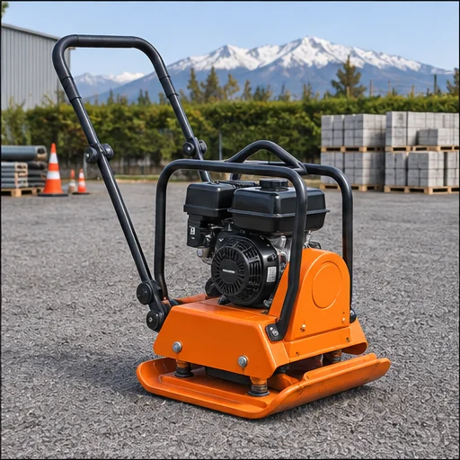
01VILLAGRÁN RENTAL · PUCÓN
LA MÁQUINA
JUSTA PARA HACERLO.
Arriendo de maquinaria y equipos para construir, reparar y mantener. Encuentra lo que necesitas y consúltanos directo por WhatsApp.
✓Arriendo sin garantía, según lo anunciado por la empresa
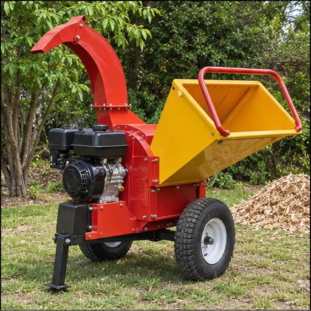
01 / EQUIPOS PARA TU PROYECTOPUCÓN, CHILE
EQUIPOS PARA AVANZAR
Tu proyecto no espera.
Nosotros tampoco.
Desde una placa compactadora hasta una chipeadora, en Villagrán encuentras alternativas para distintas etapas de la obra y el trabajo exterior.
Revisa los equipos, cuéntanos qué necesitas y consulta disponibilidad y condiciones por WhatsApp.
Ver todos los equiposNUESTRO CATÁLOGO
Encuentra tu próximo equipo.
Selecciona un rubro o busca por nombre. Consulta cada equipo directamente por WhatsApp.
Mostrando 16 equipos
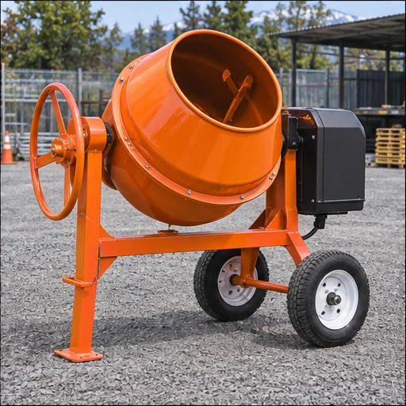
02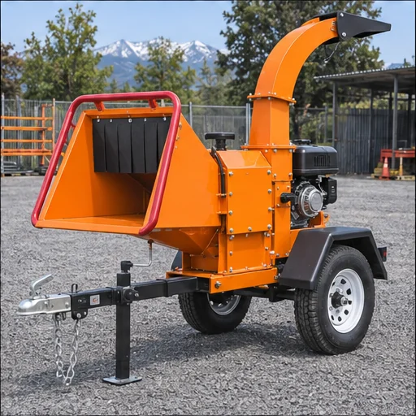
03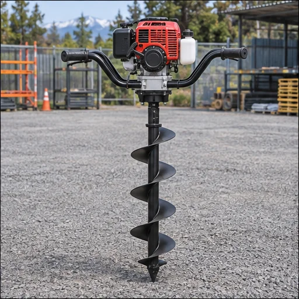
04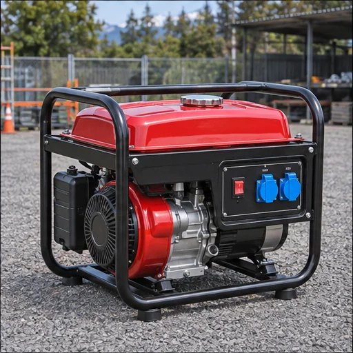
05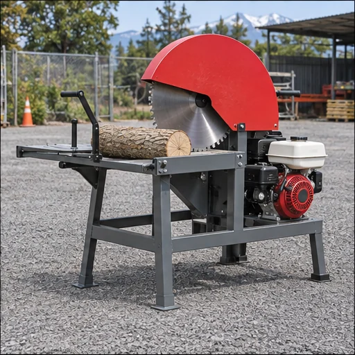
06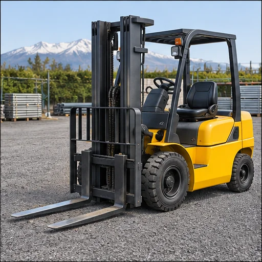
07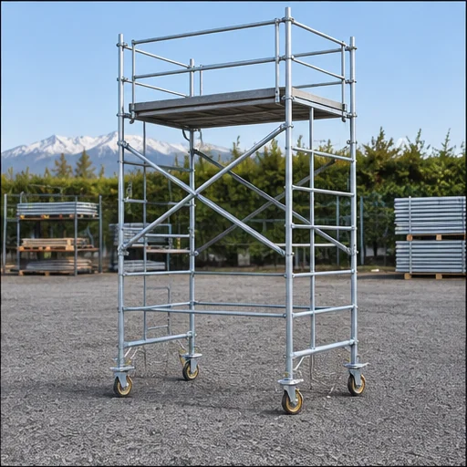
08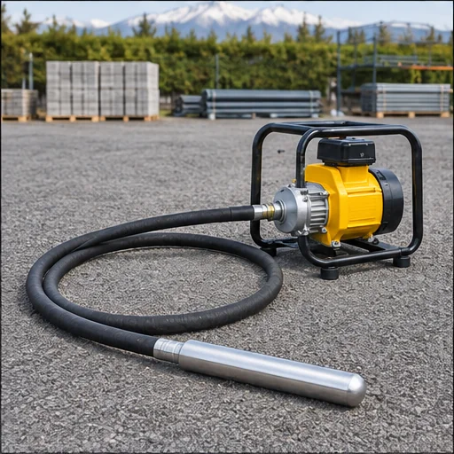
09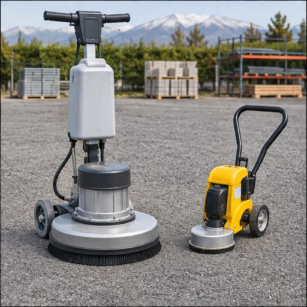
10TERMINACIONES
Pulidora de pisos
Disponible con máquina esquinera. Lijas a la venta para el equipo.
Consultar arriendo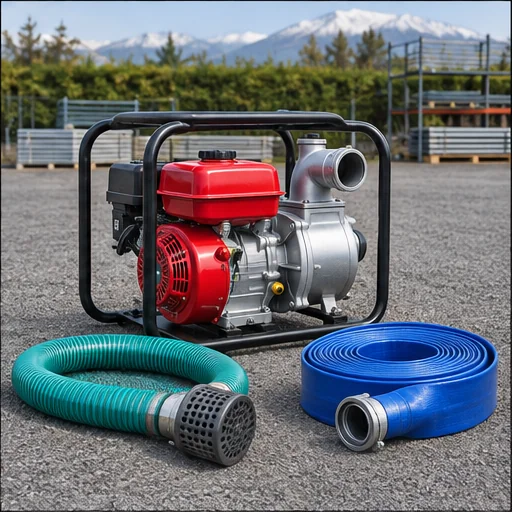
11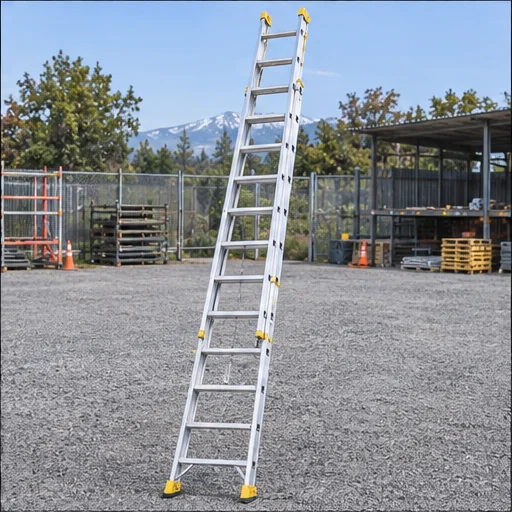
12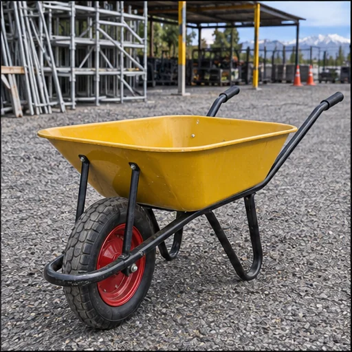
13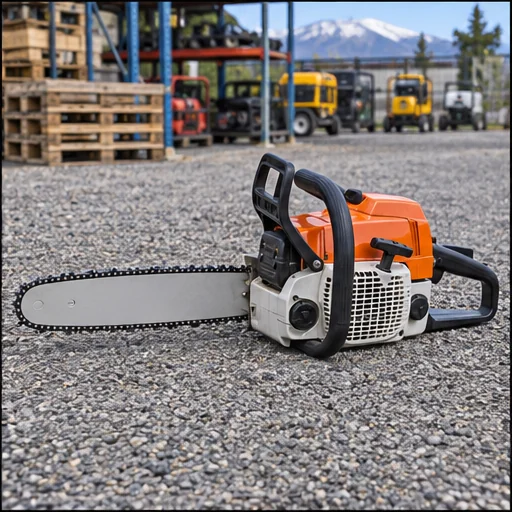
14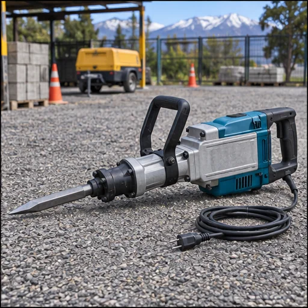
15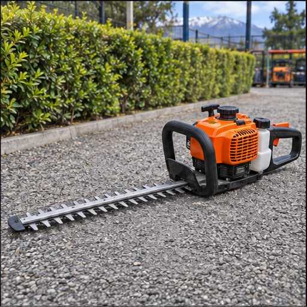
16No encontramos ese equipo. Pregúntanos por WhatsApp ↗
Imágenes ilustrativas de los tipos de equipos. Confirma modelo y disponibilidad al consultar.
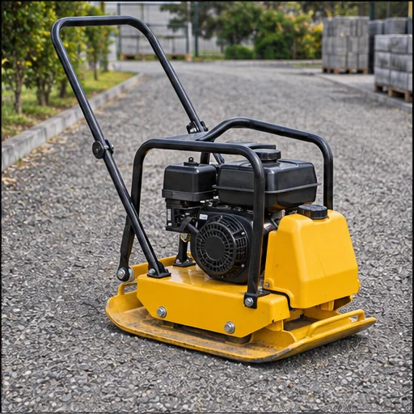
VILLAGRÁN / RENTALDIRECTO Y SIMPLE
El trabajo parte con una buena herramienta.
Cuéntanos qué proyecto tienes y qué equipo necesitas. Te respondemos por WhatsApp para coordinar el arriendo.
Consultar disponibilidadCÓMO ARRENDAR
Del catálogo a la acción.
01 /
Elige tu equipo
Explora el catálogo por tipo de trabajo o busca la máquina que necesitas.
02 /
Escríbenos
Abre WhatsApp desde la ficha. El nombre del equipo irá en tu mensaje.
03 /
Coordina tu arriendo
Confirma disponibilidad, valor, plazo y retiro directamente con Villagrán.
ENCUÉNTRANOS EN PUCÓN
Estamos más cerca de tu próximo proyecto.
Pasaje El Triunfo 114
Pucón, Región de La Araucanía
La empresa informó su traslado a esta dirección. Consulta antes de venir para confirmar la disponibilidad del equipo.
VILLAGRÁNPasaje El Triunfo 114
¿LISTO PARA EMPEZAR?